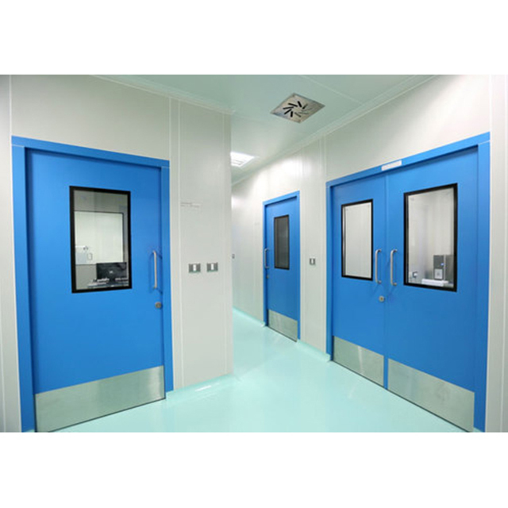

Hospital metal doors are engineered for durability, hygiene, and safety, making them a key element in healthcare facilities. Here are the essential details: Materials and Construction Common Metals Used: Stainless steel (often SS304 grade) and galvanized steel are the most prevalent due to their corrosion resistance, anti-microbial properties, and ease of cleaning. Thickness: Typical door thickness ranges from 46mm to 50mm; door frames are often 1.2mm to 1.5mm thick (18 gauge). Finishes: Stainless steel doors are available in various finishes—brushed, mirror, or powder-coated for additional durability or aesthetic harmonization. Core Materials: Cores are commonly filled with polyurethane foam (PUF) or honeycomb structures for strength, soundproofing, and insulation. Frame Profiles: Single and double rebated frames, often with sizes like 100mm x 58mm, ensure stability and tight fitting. Types and Applications Swing/Hinged Doors: Used in operation theaters, patient rooms, clean rooms, with options for single or double doors. Sliding Doors: Common in ICU, emergency rooms, or where space is limited. Fire-rated Doors: Specially constructed to contain fire and smoke for a specified duration (tested to UL, BS standards). Radiation/Lead-lined Doors: For x-ray or MRI rooms, these metal doors include lead sheets for radiation shielding. Glazed Doors: Feature vision panels with double glazing, allowing observation while maintaining containment (e.g., in intensive care units). Design Features Dimensions: Standard widths for patient room doors range from 900mm to 1400mm, heights around 2100mm.2500mm, and custom options are available. Easy-Clean Surfaces: Metal hospital doors have flush surfaces free from dirt-collecting joints, allowing easy disinfection and maintenance. Durability: Doors are designed to withstand heavy usage—impacts from trolleys, stretchers, and frequent cleaning. Sound Insulation: Some models provide up to 50dB noise reduction, critical for quiet patient care areas. Hardware and Accessories Vision Panels: Standard glass sizes include 300x300mm up to 450x900mm, with double-glazing for security and hygiene. Handles and Seals: Equipped with specialized door seals, drop seals, and antimicrobial hardware to prevent drafts, dust, and microbial spread. Automatic Options: Available with sliding or swing automatic opening for hands-free access, especially in operating or isolation areas. Customization: Colors, finishes, window shapes, and even accessory options (e.g., anti-bacterial coatings) are typically customizable to match facility requirements. Compliance and Safety Standards: Manufactured and installed to meet international safety and hygiene standards (e.g., ANSI/SDI, EN, UL, BS). Fire Safety: Many doors are certified fire-rated for use in escape routes and zones needing fire compartmentalization. Pressure Resistance: Hermetically sealed versions maintain room pressurization, vital in operating theaters and isolation rooms. Popular Use Cases Operation theaters Patient wards ICUs and isolation rooms Radiology (X-ray/MRI/CT scan) rooms Pharmacies and clean rooms Entrances and emergency exits These door systems are fundamental in upholding hospital hygiene, safety, and efficient movement of people and equipment, with options tailored for every clinical need.
